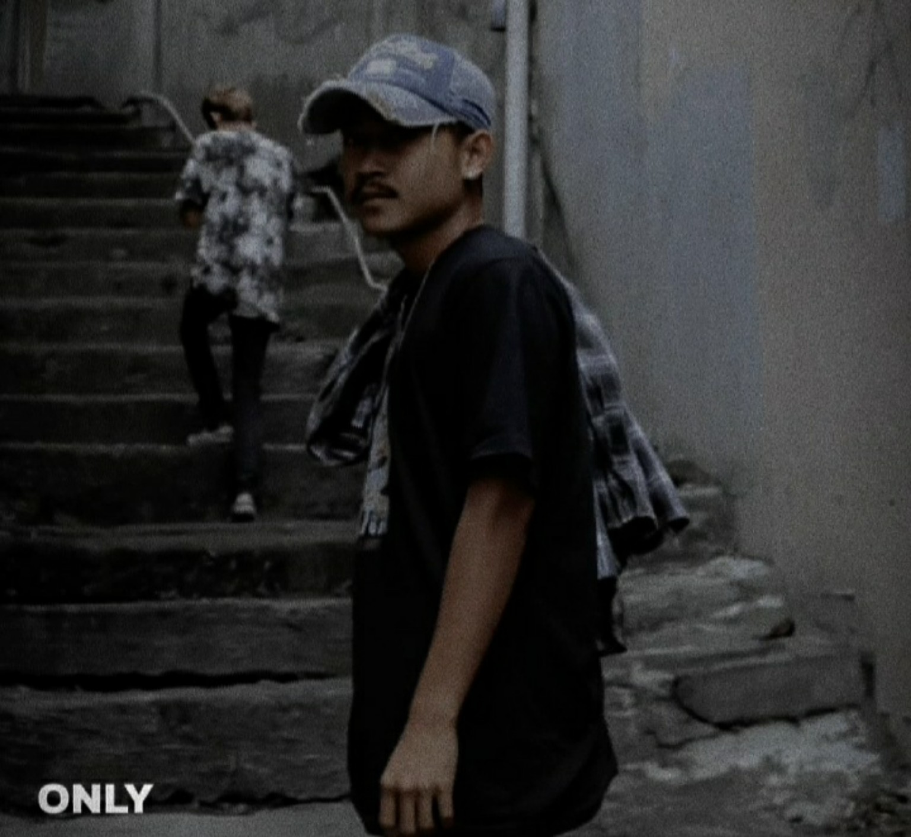

Profil Rohmat Hungkul: Biodata, Aktivitas, dan Karya

Rohmat Hungkul adalah nama yang digunakan oleh M. Rohmat Hidayat. Website ini menjadi halaman profil untuk memperkenalkan biodata, aktivitas, karya, dan berbagai kegiatan yang ingin dibagikan kepada publik.
Biodata Rohmat Hungkul
M. Rohmat Hidayat
Rohmat Hungkul
Purwakarta, Jawa Barat
SMKN Kiarapedes
Aktivitas dan Karya
Halaman ini digunakan untuk mendokumentasikan aktivitas, karya, proyek, usaha, serta hal-hal yang menjadi bagian dari perjalanan Rohmat Hungkul.
Warkop Tefforss
Warkop Tefforss merupakan salah satu kegiatan usaha yang dapat ditemukan melalui website dan media sosialnya. Warkop Tefforss menyediakan berbagai jajanan ringan serta minuman panas dan dingin.
Website Warkop Tefforss dapat dikunjungi melalui tombol di bawah.
Media Sosial
Dokumentasi
Foto tambahan bisa ditambahkan kapan saja. Jika nanti ada foto lain, cukup upload dan kita dapat menambahkannya ke halaman ini.